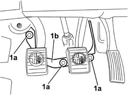
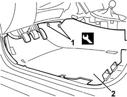

7040L07 PASSENGER COMPARTMENT FLOOR LEFT FRONT CARPET - R.R.
- Path
- Procedures > 70 FITTINGS > 7040 BODY INTERIOR FITTINGS AND TRIM > 7040L CABIN FLOOR COVERING > 7040L07 PASSENGER COMPARTMENT FLOOR LEFT FRONT CARPET - R.R.
- Kind
- repair procedure (removal / refitting; the operation number is the code)
- Applies to
- all engines; all production periods
- Interactive page
- https://sloeber94.github.io/elrnDB/#/939011282
Applies to: all engines; all production periods
 Removing
Removing
 Refitting
RefittingFor the left side.
Op. 7045A10 FRONT SEAT (ONE), LEFT OR RIGHT - R.R.
For the left side.
Op. 7040A65 CONSOLE SIDE CLOSING (ONE) - R.R.
For the left side.
Op. 7040L40 FRONT DOOR RUNNING BOARD (ONE), LEFT OR RIGHT - R.R.
For the left side.
Op. 7040L50 DRIVER SIDE FOOT REST - R R
1. Working in the area of the pedal assembly, release the retainers (1a) and move the frame (1b) slightly to release it from the carpet on the floor.

Applies to: all engines; all production periods
1. Release the retaining buttons using the special tool.
Tool | Description | Function | Validity |
|---|---|---|---|
1823015000 | Knife | Retainer removal |
2. Remove the carpet.

Applies to: all engines; all production periods
Refitting
Removing- Check that the carpet is not damaged.
- Fit the carpet.
- Attach the carpet retaining buttons.
- In the area of the pedal assembly, place the frame in position above the carpet and attach the retainers.
Op. 7040L50 DRIVER SIDE FOOT REST - R R
Op. 7040L40 FRONT DOOR RUNNING BOARD (ONE), LEFT OR RIGHT - R.R.
Topics linked from this page (4)
- 7040A65 CONSOLE SIDE CLOSING (ONE) - R.R.
- 7040L40 FRONT DOOR RUNNING BOARD (ONE), LEFT OR RIGHT - R.R.
- 7040L50 DRIVER SIDE FOOT REST - R R
- 7045A10 FRONT SEAT (ONE), LEFT OR RIGHT - R.R.